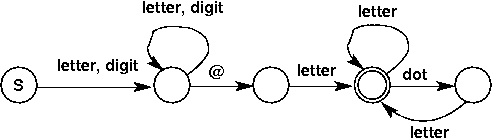

The regular expression
Two new tokens, INT_LITERAL and DBL_LITERAL would be defined. The regular expressions for those tokens are
--------
| |
INT_LITERAL v | digit
----- digit ======= |
| S | ----------> || || ---
----- =======
------
| |
DBL_LITERAL v | digit
----- digit ----- |
| S | ----------> | | ---
----- ----- digit
| ----- =======
--------> | | ----> || ||<--
dot ----- ======= |
| |
-------
digit
The modified finite-state machines are
-----
| |
INT_LITERAL v | digit
----- digit ----- ================
| S | ----------> | | ---------------------->|| put back ||
----- ----- any char except digit || 1 char; ||
|| return ||
|| INT_LITERAL ||
================
digit digit
------ -----
| | | |
DBL_LITERAL v | v | =================
----- digit ----- ----- || put back ||
| S | ----------> | | -------> | | ----------------->|| 1 char; ||
----- ----- dot ----- any char except || return ||
digit || DBL_LITERAL ||
=================
The "combined" finite-state machine would be augmented by having one new edge out of the start state, leading to the node labeled A below.
-----
| |
v | digit
----- digit ----- ================
| A | ----------> | | ---------------------->|| put back ||
----- ----- any char except || 1 char; ||
| digit or dot || return ||
dot | || INT_LITERAL ||
v digit =================
----- -----
| | | |
----- v |
| digit ----- any char except digit ================
---------> | | ----------------------> || put back ||
----- || 1 char; ||
|| return ||
|| DBL_LITERAL ||
=================